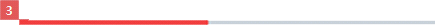

Progress Bar
C_PROGRESSBAR
- Definition
- Use this to show the ongoing status with a long narrow bar. This is useful in a long list of items or to show the processing time.
- Usage
-
-
Choose a correct format from the following examples :
- - Progress rate: <<progress rate>> "%"
- - Number of items in progress: <<current number of items in progress>> "/" <<total number of items>>, <<current number of items in progress>> "of" <<total number of items>>
- - Processing time: <<current time>> “/” <<total time>>
Use progress bars to show the number of items in progress or the processing time.
Use progress bars or progress circles to show the progress rate, depending on the screen layout.
-
- Interaction
-
- Status
-
- - Determinate : This is displayed when it's predictable to estimate how much time will take.
- - Indeterminate : This is displayed when it's unpredictable to estimate how much time will take.
- - Buffer : This is displayed when it's necessary to show the buffering status.
- How to change the status
-
- - Indeterminate and Determinate : This is displayed when the processing time was unpredictable first but becomes predictable later.
- - Determinate and Indeterminate : This is displayed when processing time was predictable first but becomes unpredictable later
(e.g. app download and installation).
- Specs
-
- Properties
-
- Progress bar consists of the following elements:
-
- 1. Bar (Mandatory)
-
- - Display progress status information
- 2. Main text (Optional)
-
- - Place the total value
- 3. Sub text (Optional)
-
- - Place the current value
- Property Table
-
C_PROGRESSBAR PROPERTY USE VALUE ADDITIONAL Bar ◎ - Main text <<value>> Total value Sub text <<value>> Current value - Visual
-
- Motion
-
- C_PROGRESSBAR_WHITE
- C_PROGRESSBAR_WHITEBUFFERING
- C_PROGRESSBAR_WHITERECORDING
- 

- *Tags :
- Loading, Progress Circle, Playback Slider